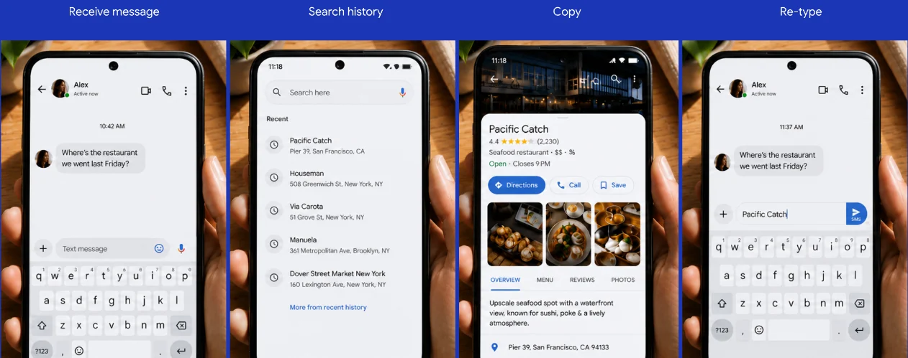
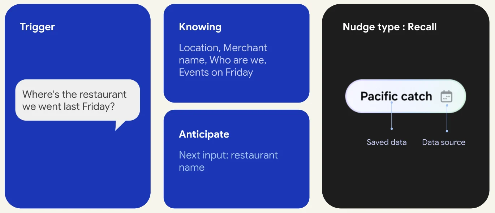
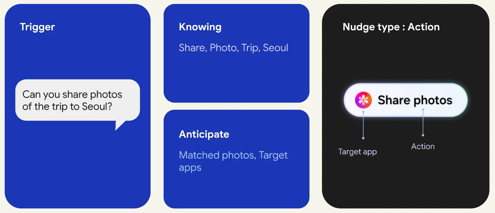
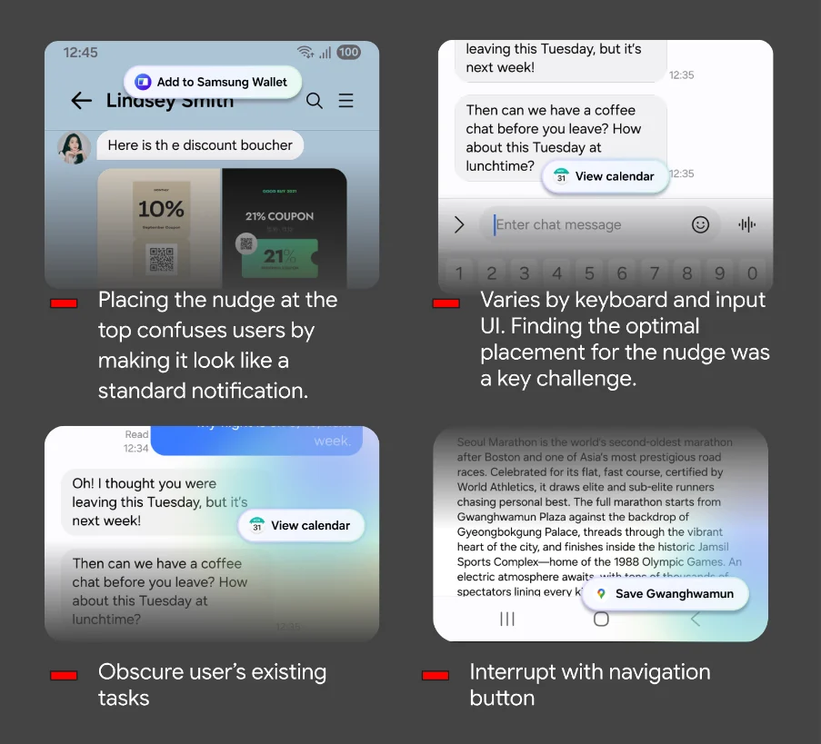
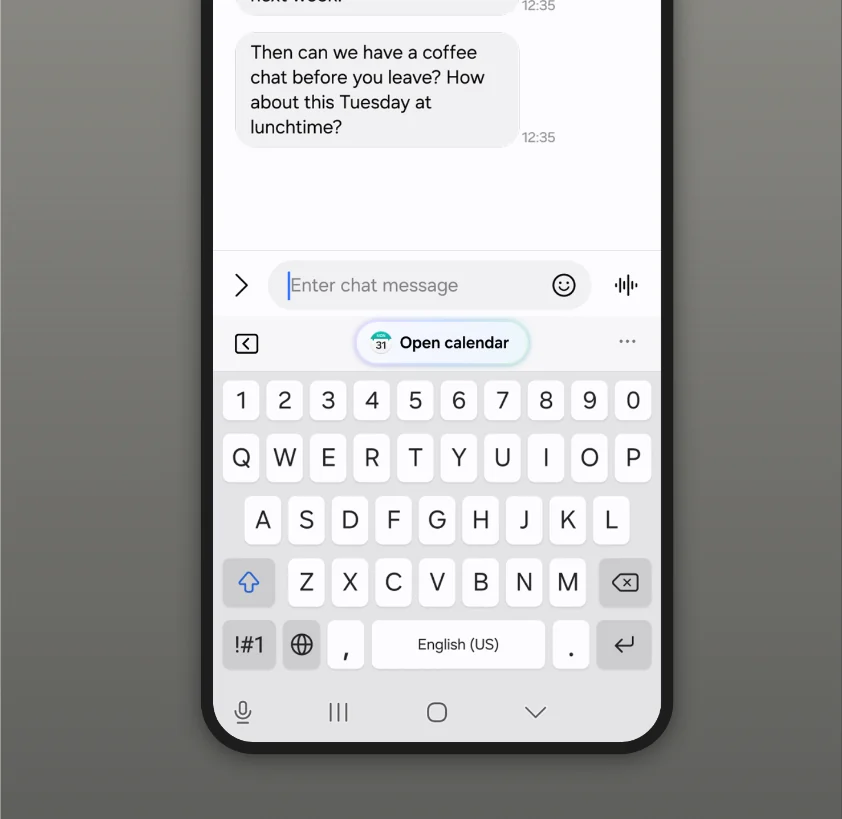
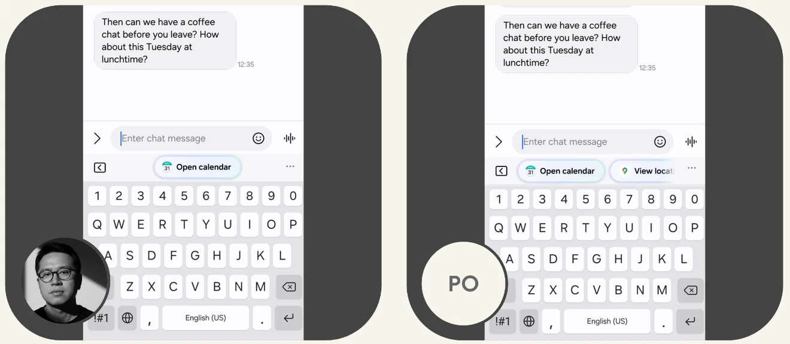
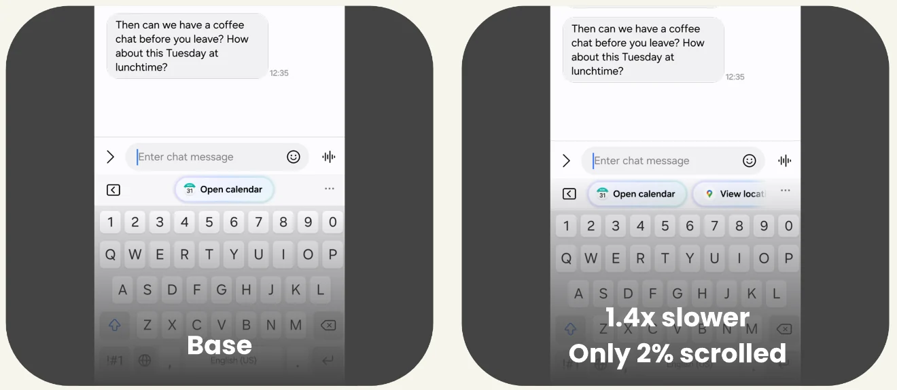
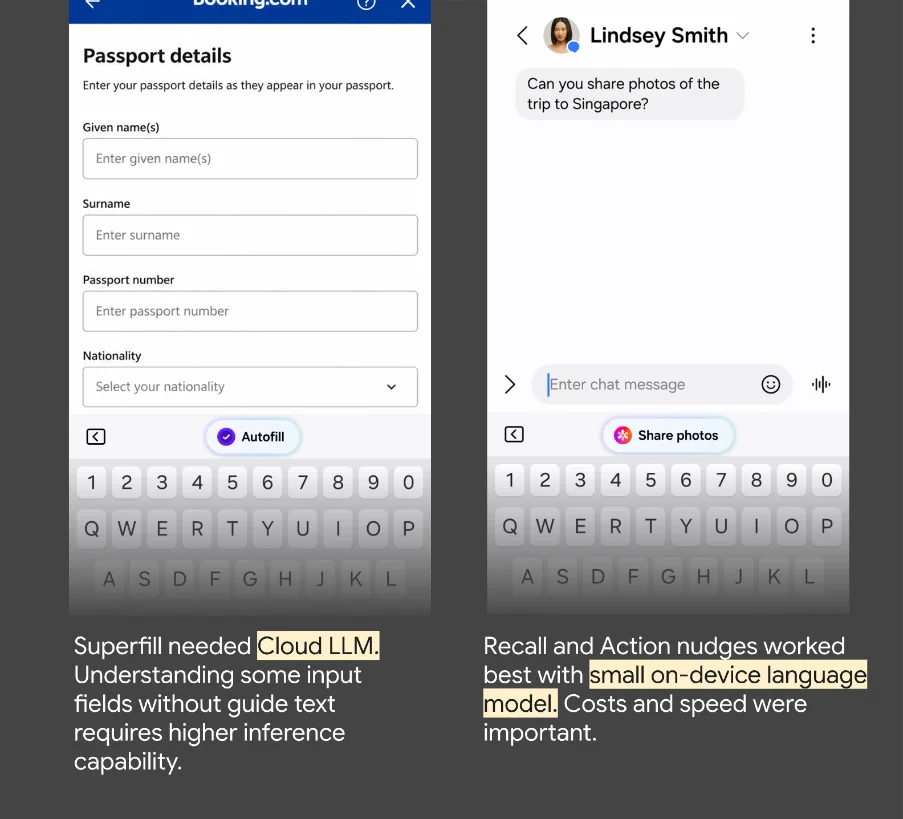
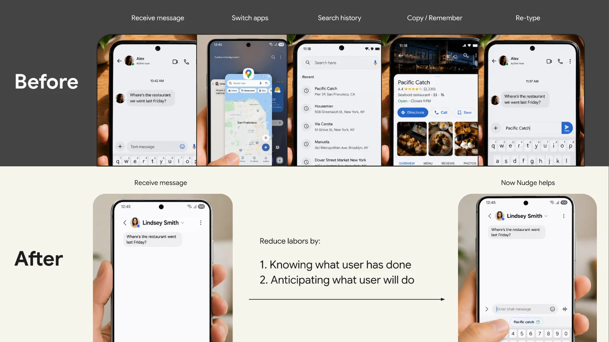
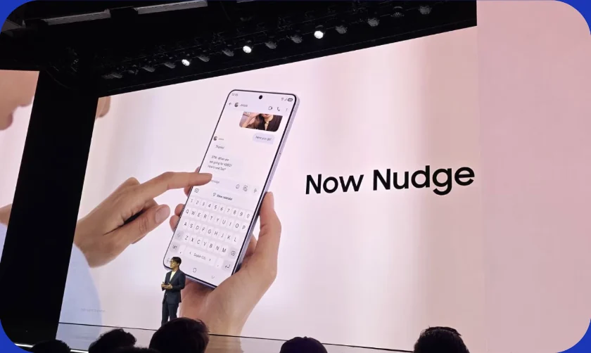

Now Nudge
The answer is already on your keyboard

When a friend asks "Let's meet on Saturday?", most of us say yes and then go check. Now Nudge removes that check. It reads the message, knows what you've done, anticipates what you'll type next, and offers it as one chip above the keyboard. I led the design from research to launch, including the interaction model, where the nudge lives, and which AI model powers each moment.
Users are forced to orchestrate
Someone texts, "Where's the restaurant we went last Friday?" To answer, you switch apps, search your history, copy the name, come back, and retype it. Every single time, for something this simple.

What people expect from AI
I ran a survey of 300 people and 8 in-person interviews. People wanted three things from AI, and those three became the lens for every decision that followed.
Knowing
It remembers who you are and what you've done.
Anticipating
It predicts what you need before you ask.
Acting
It does the steps for you.
"I know what needs to happen. I just hate doing all the steps to get there."Interview participant
Start where AI can act with confidence
In the survey, 82% felt most inefficient in productivity and 65% in communication. I started with communication anyway. In a conversation the context is already on screen and the action is right there, so AI can act with confidence.
Where people feel inefficient. Now Nudge survey, n=300.
Two kinds of nudge
Recall nudge: makes input easier
"Where's the restaurant we went last Friday?" Now Nudge picks out "restaurant" and "last Friday," checks your location history, and finds Pacific Catch, Friday at 7pm. That's what you were about to type, so it's waiting as a chip, ready to send.

Action nudge: see it before you tap
"Can you share photos of the trip to Seoul?" It finds photos tagged Seoul and offers one button, Share photos. Tap it and the gallery opens already filtered.

Where should a guess live?
At the top it looked like a notification. In the middle of the chat it blocked the conversation. By the navigation bar it interrupted whatever you were doing.

I landed on the keyboard. The keyboard isn't just input. It's the moment of intent. It never covers content, leads naturally into typing for recall nudges, and works in third-party chat apps like KakaoTalk and WhatsApp.

One nudge or many?
My product owner and I disagreed on how, not what. I designed one nudge at a time. He wanted a scrollable row: we can't always know what the user wants, so why limit them?

I pointed to Hick's Law, which says more options mean slower decisions, and a conversation isn't a browsing moment. Instead of arguing, we tested both, measuring time to choose and how many people scrolled.

The scroll version was 1.4x slower, and only 2% of people ever scrolled to a second option. We shipped the single most confident suggestion.
The right model for each moment
Recall and action nudges needed speed and low cost, so they run on a small on-device language model. Superfill, which fills travel forms even when fields have no labels, needed deeper reasoning, so it uses a cloud LLM. Choosing the right tool for each moment is part of AI product design.

Designed for the Fold
On the Fold, View calendar opens in split screen, so you check your schedule without leaving the conversation you're replying to.
Before and after
Five steps (receive, switch apps, search, copy, retype) collapse into one tap, because the system knows what you've done and anticipates what you'll do.

Outcomes
Now Nudge shipped and was featured on stage at Samsung Unpacked 2025. USA TODAY called it their favorite Galaxy AI feature. 26% of users have tried it, against a 14% Galaxy AI baseline, and 52% of them came back the next month.

"The AI feature I feel most in daily life."Bolt, tech reviewer
Lesson learned
Context makes AI know without being asked.
The best suggestion is the one you'd have typed anyway.